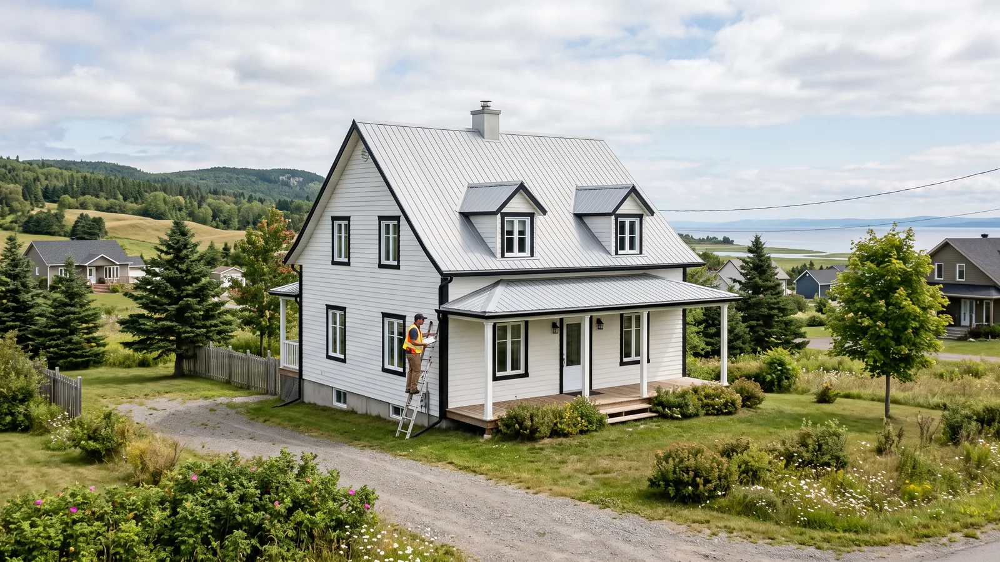
regions · bas-saint-laurentMaison québécoise inspectée dans un environnement résidentiel du Bas-Saint-Laurent, relief doux et végétation maritime discrète. Photographie immobilière documentaire, réaliste, lumière naturelle, architecture résidentielle québécoise crédible, composition horizontale 16:9, aucun texte lisible, aucun logo, aucune enseigne, aucune adresse, aucun monument reconnaissable, aucune main en gros plan.
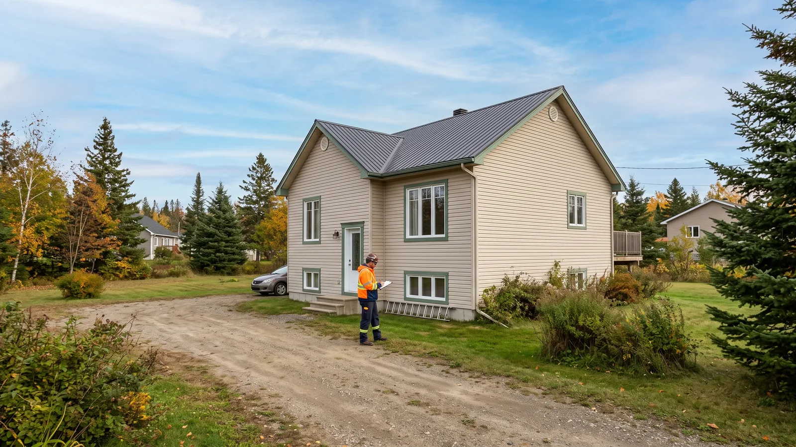
regions · saguenay-lac-saint-jeanInspection extérieure d'une maison familiale au Saguenay–Lac-Saint-Jean, terrain spacieux et contexte nordique résidentiel. Photographie immobilière documentaire, réaliste, lumière naturelle, architecture résidentielle québécoise crédible, composition horizontale 16:9, aucun texte lisible, aucun logo, aucune enseigne, aucune adresse, aucun monument reconnaissable, aucune main en gros plan.
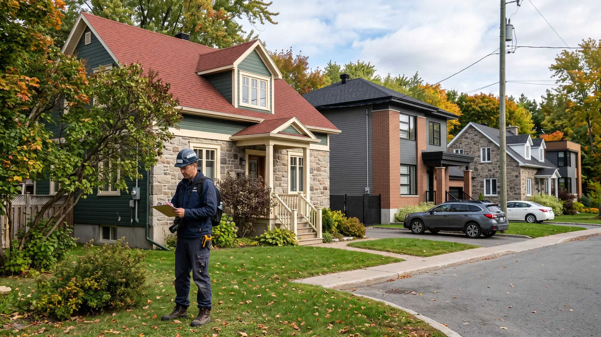
regions · capitale-nationaleInspection d'une propriété résidentielle de la Capitale-Nationale, mélange sobre de maisons anciennes et récentes. Photographie immobilière documentaire, réaliste, lumière naturelle, architecture résidentielle québécoise crédible, composition horizontale 16:9, aucun texte lisible, aucun logo, aucune enseigne, aucune adresse, aucun monument reconnaissable, aucune main en gros plan.
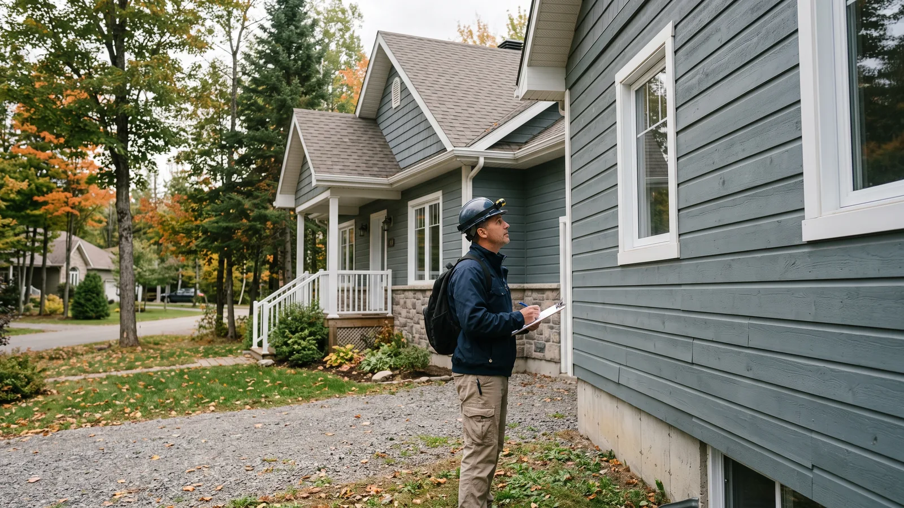
regions · mauricieInspecteur observant l'extérieur d'une maison en Mauricie, quartier résidentiel boisé et calme. Photographie immobilière documentaire, réaliste, lumière naturelle, architecture résidentielle québécoise crédible, composition horizontale 16:9, aucun texte lisible, aucun logo, aucune enseigne, aucune adresse, aucun monument reconnaissable, aucune main en gros plan.
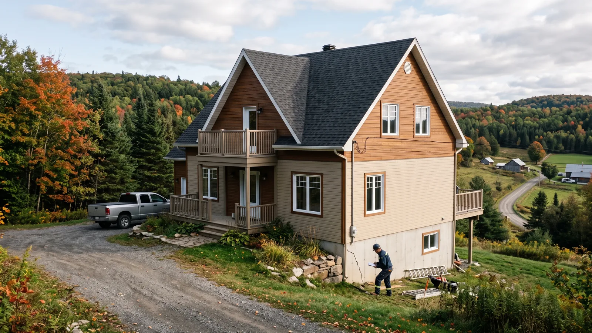
regions · estrieMaison résidentielle en inspection en Estrie, terrain vallonné et architecture québécoise sans repère touristique. Photographie immobilière documentaire, réaliste, lumière naturelle, architecture résidentielle québécoise crédible, composition horizontale 16:9, aucun texte lisible, aucun logo, aucune enseigne, aucune adresse, aucun monument reconnaissable, aucune main en gros plan.
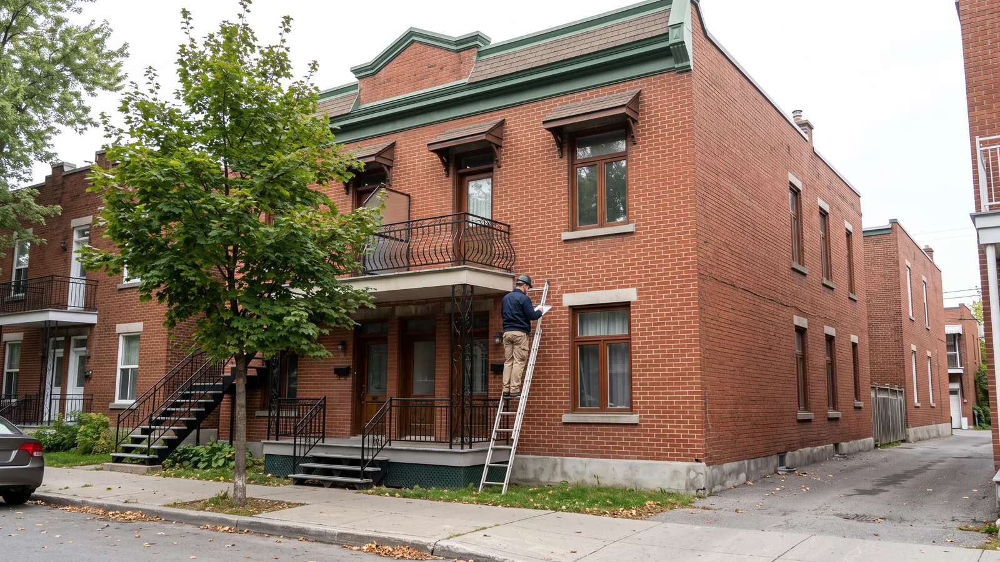
regions · montrealInspection d'un plex résidentiel montréalais en brique, rue urbaine calme sans enseigne ni adresse. Photographie immobilière documentaire, réaliste, lumière naturelle, architecture résidentielle québécoise crédible, composition horizontale 16:9, aucun texte lisible, aucun logo, aucune enseigne, aucune adresse, aucun monument reconnaissable, aucune main en gros plan.
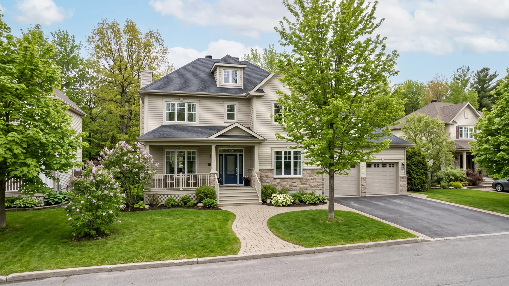
regions · outaouaisInspection extérieure d'une maison familiale en Outaouais, quartier résidentiel verdoyant. Photographie immobilière documentaire, réaliste, lumière naturelle, architecture résidentielle québécoise crédible, composition horizontale 16:9, aucun texte lisible, aucun logo, aucune enseigne, aucune adresse, aucun monument reconnaissable, aucune main en gros plan.
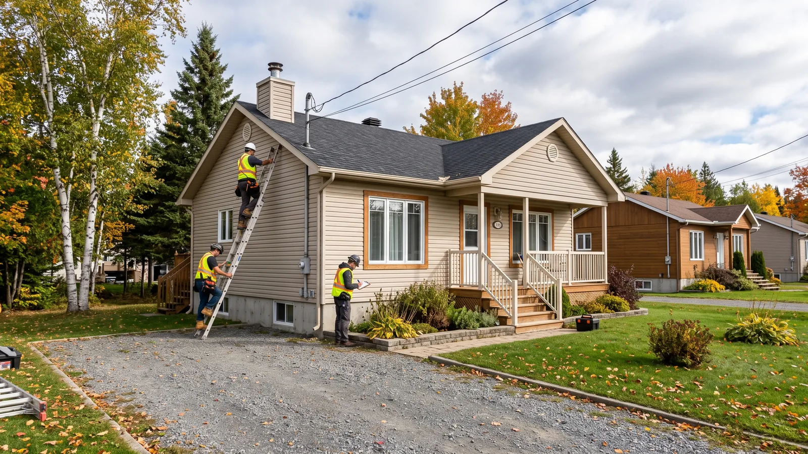
regions · abitibi-temiscamingueMaison détachée inspectée en Abitibi-Témiscamingue, contexte résidentiel nordique réaliste. Photographie immobilière documentaire, réaliste, lumière naturelle, architecture résidentielle québécoise crédible, composition horizontale 16:9, aucun texte lisible, aucun logo, aucune enseigne, aucune adresse, aucun monument reconnaissable, aucune main en gros plan.
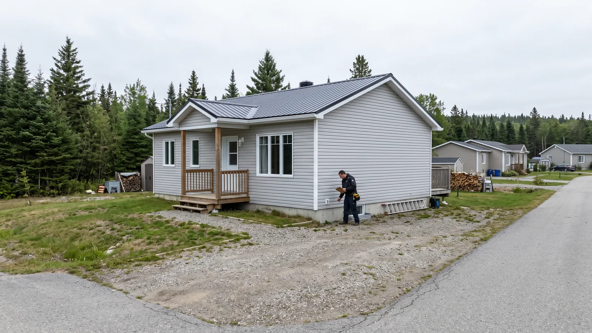
regions · cote-nordInspection d'une maison de la Côte-Nord, contexte résidentiel sobre près d'un paysage boréal sans monument. Photographie immobilière documentaire, réaliste, lumière naturelle, architecture résidentielle québécoise crédible, composition horizontale 16:9, aucun texte lisible, aucun logo, aucune enseigne, aucune adresse, aucun monument reconnaissable, aucune main en gros plan.
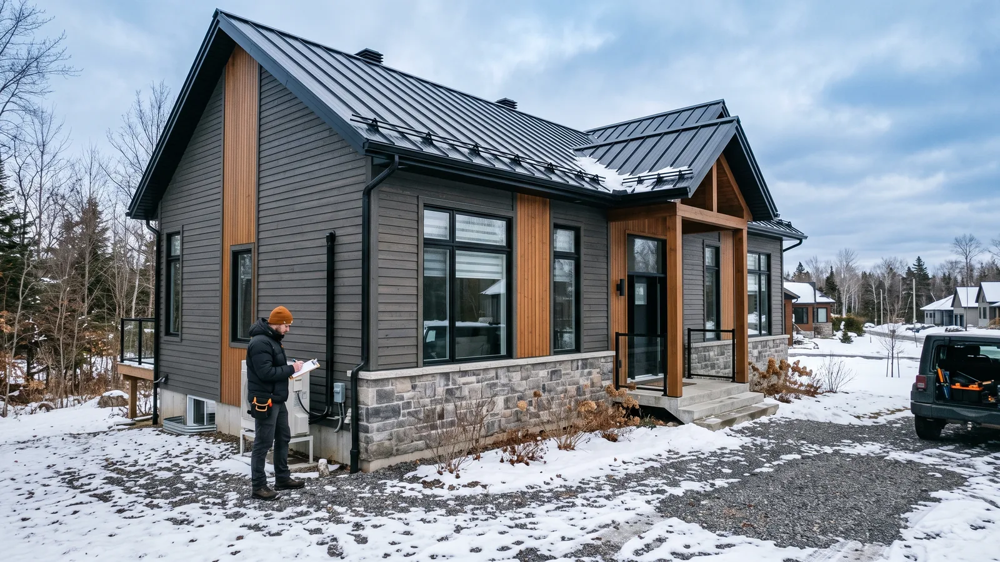
regions · nord-du-quebecMaison nordique adaptée au climat faisant l'objet d'une inspection extérieure, lumière froide naturelle. Photographie immobilière documentaire, réaliste, lumière naturelle, architecture résidentielle québécoise crédible, composition horizontale 16:9, aucun texte lisible, aucun logo, aucune enseigne, aucune adresse, aucun monument reconnaissable, aucune main en gros plan.
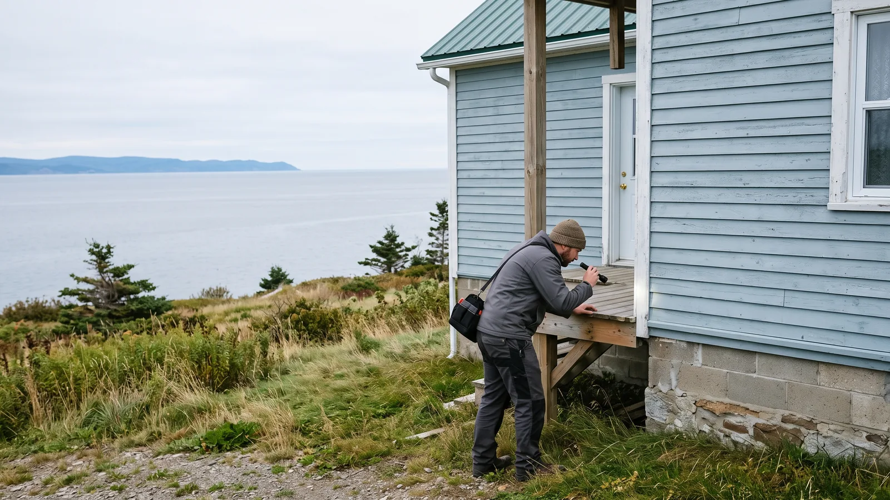
regions · gaspesie-iles-de-la-madeleineInspection d'une maison résidentielle gaspésienne, contexte côtier discret sans attraction identifiable. Photographie immobilière documentaire, réaliste, lumière naturelle, architecture résidentielle québécoise crédible, composition horizontale 16:9, aucun texte lisible, aucun logo, aucune enseigne, aucune adresse, aucun monument reconnaissable, aucune main en gros plan.
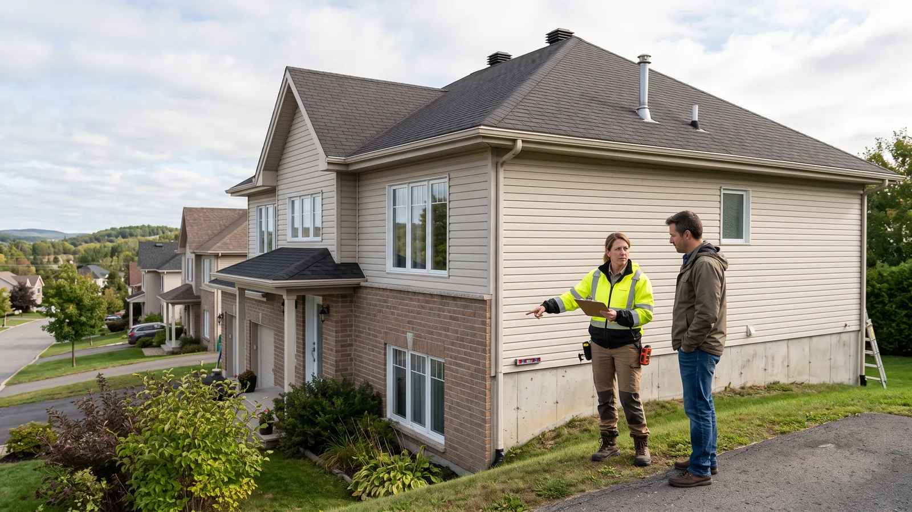
regions · chaudiere-appalachesInspection d'une maison familiale en Chaudière-Appalaches, quartier résidentiel avec relief doux. Photographie immobilière documentaire, réaliste, lumière naturelle, architecture résidentielle québécoise crédible, composition horizontale 16:9, aucun texte lisible, aucun logo, aucune enseigne, aucune adresse, aucun monument reconnaissable, aucune main en gros plan.
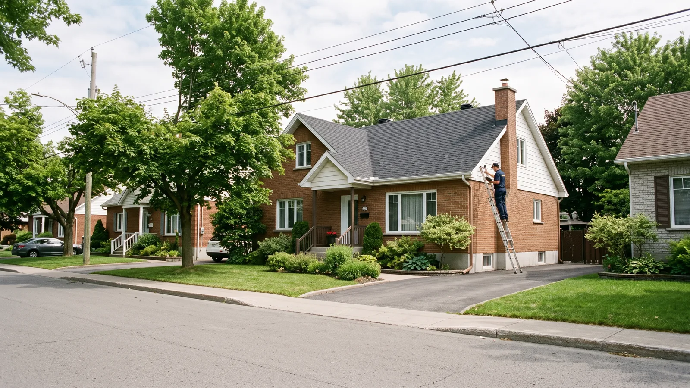
regions · lavalInspection d'une maison de banlieue à Laval, rue résidentielle mature et propriété bien visible. Photographie immobilière documentaire, réaliste, lumière naturelle, architecture résidentielle québécoise crédible, composition horizontale 16:9, aucun texte lisible, aucun logo, aucune enseigne, aucune adresse, aucun monument reconnaissable, aucune main en gros plan.
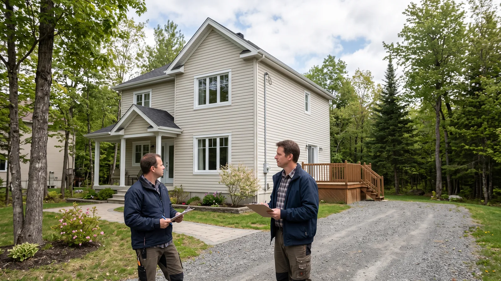
regions · lanaudiereInspecteur devant une maison unifamiliale dans Lanaudière, terrain boisé et quartier calme. Photographie immobilière documentaire, réaliste, lumière naturelle, architecture résidentielle québécoise crédible, composition horizontale 16:9, aucun texte lisible, aucun logo, aucune enseigne, aucune adresse, aucun monument reconnaissable, aucune main en gros plan.
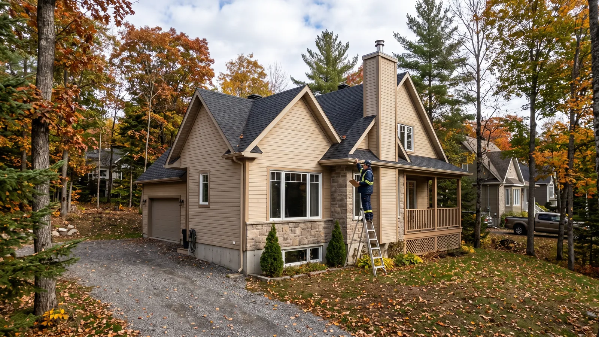
regions · laurentidesInspection d'une maison des Laurentides, environnement résidentiel boisé et relief discret. Photographie immobilière documentaire, réaliste, lumière naturelle, architecture résidentielle québécoise crédible, composition horizontale 16:9, aucun texte lisible, aucun logo, aucune enseigne, aucune adresse, aucun monument reconnaissable, aucune main en gros plan.
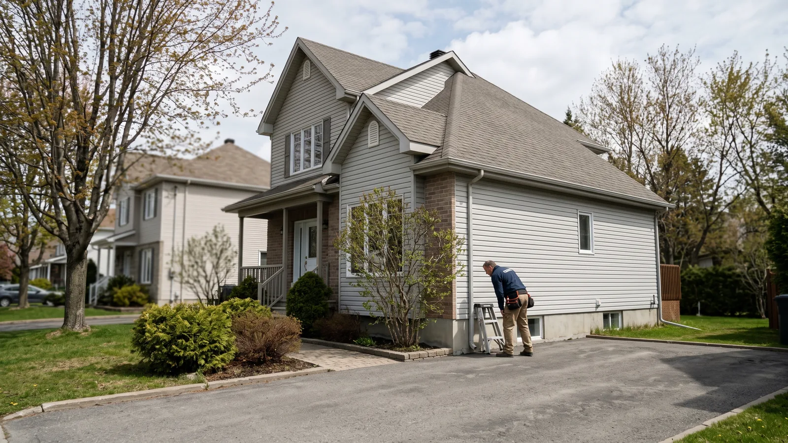
regions · monteregieInspection d'une propriété résidentielle en Montérégie, quartier familial et terrain plat. Photographie immobilière documentaire, réaliste, lumière naturelle, architecture résidentielle québécoise crédible, composition horizontale 16:9, aucun texte lisible, aucun logo, aucune enseigne, aucune adresse, aucun monument reconnaissable, aucune main en gros plan.
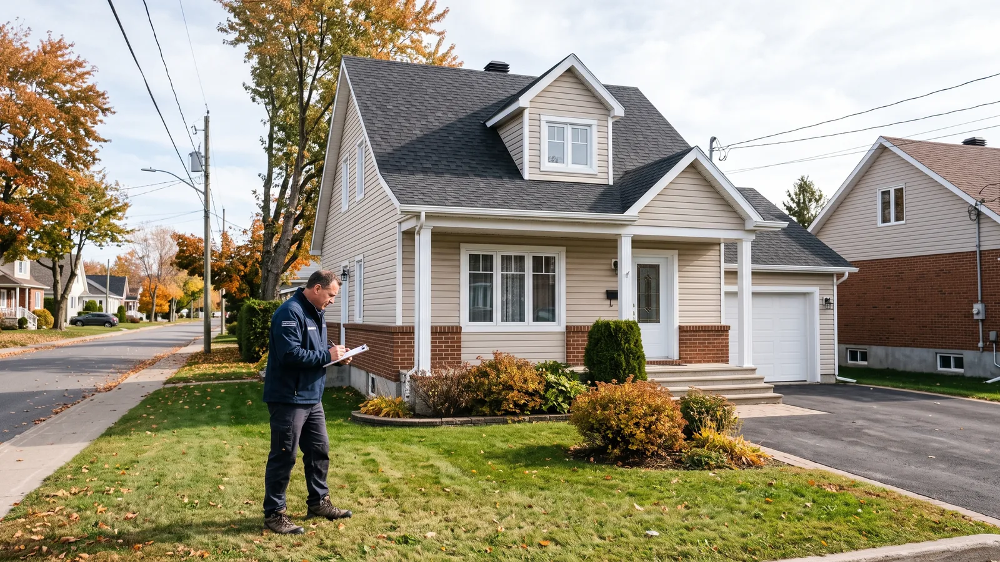
regions · centre-du-quebecInspection extérieure d'une maison au Centre-du-Québec, contexte résidentiel de ville moyenne réaliste. Photographie immobilière documentaire, réaliste, lumière naturelle, architecture résidentielle québécoise crédible, composition horizontale 16:9, aucun texte lisible, aucun logo, aucune enseigne, aucune adresse, aucun monument reconnaissable, aucune main en gros plan.
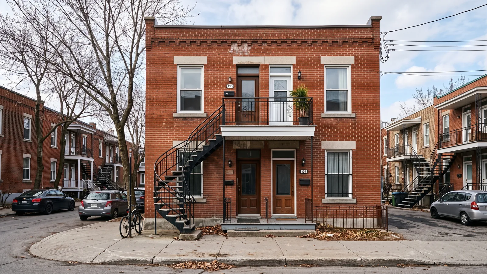
cities · montrealInspection extérieure d'un duplex ou triplex montréalais en brique, densité urbaine crédible. Photographie immobilière documentaire, réaliste, lumière naturelle, architecture résidentielle québécoise crédible, composition horizontale 16:9, aucun texte lisible, aucun logo, aucune enseigne, aucune adresse, aucun monument reconnaissable, aucune main en gros plan.
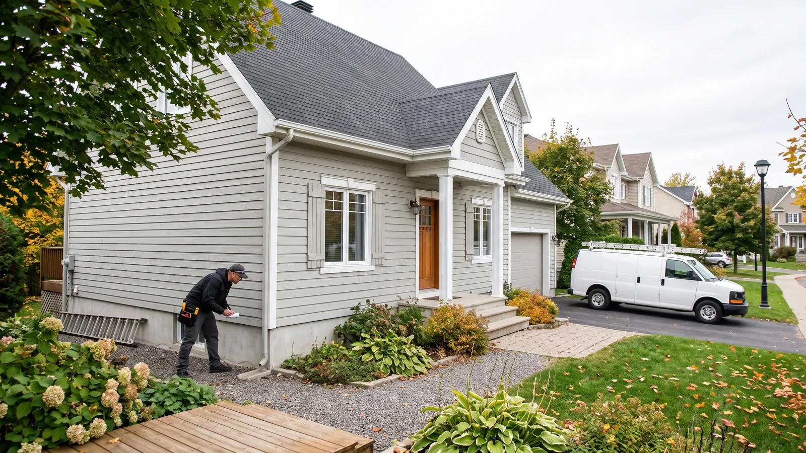
cities · quebecInspection d'une maison résidentielle de Québec, architecture locale sobre sans Vieux-Québec ni monument. Photographie immobilière documentaire, réaliste, lumière naturelle, architecture résidentielle québécoise crédible, composition horizontale 16:9, aucun texte lisible, aucun logo, aucune enseigne, aucune adresse, aucun monument reconnaissable, aucune main en gros plan.
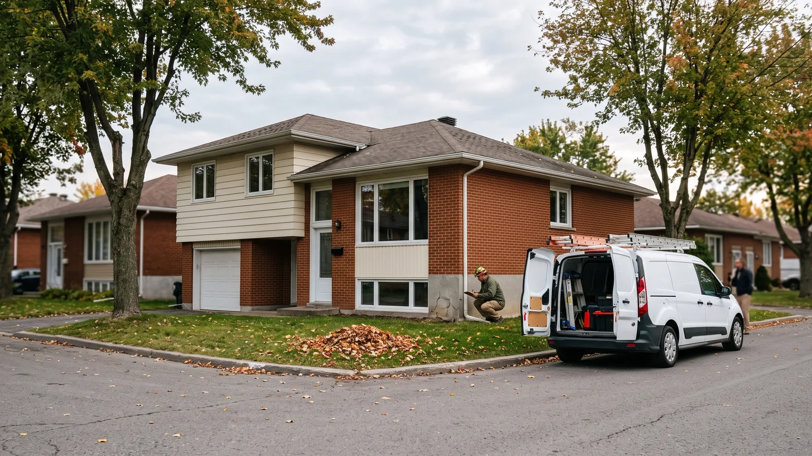
cities · lavalInspection d'une maison unifamiliale de banlieue à Laval, rue mature et terrain compact. Photographie immobilière documentaire, réaliste, lumière naturelle, architecture résidentielle québécoise crédible, composition horizontale 16:9, aucun texte lisible, aucun logo, aucune enseigne, aucune adresse, aucun monument reconnaissable, aucune main en gros plan.
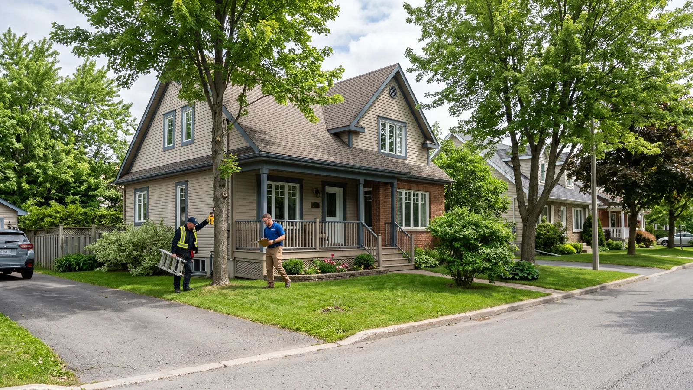
cities · gatineauInspection d'une propriété familiale à Gatineau, quartier résidentiel verdoyant. Photographie immobilière documentaire, réaliste, lumière naturelle, architecture résidentielle québécoise crédible, composition horizontale 16:9, aucun texte lisible, aucun logo, aucune enseigne, aucune adresse, aucun monument reconnaissable, aucune main en gros plan.
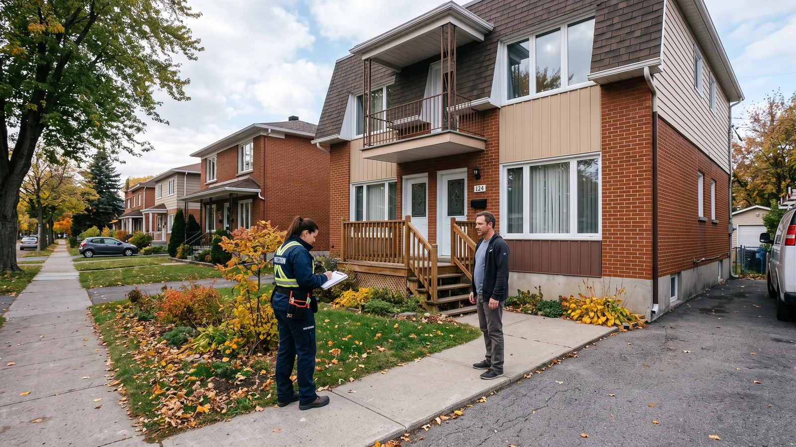
cities · longueuilInspection d'un bungalow ou duplex à Longueuil, rue résidentielle de la Rive-Sud. Photographie immobilière documentaire, réaliste, lumière naturelle, architecture résidentielle québécoise crédible, composition horizontale 16:9, aucun texte lisible, aucun logo, aucune enseigne, aucune adresse, aucun monument reconnaissable, aucune main en gros plan.
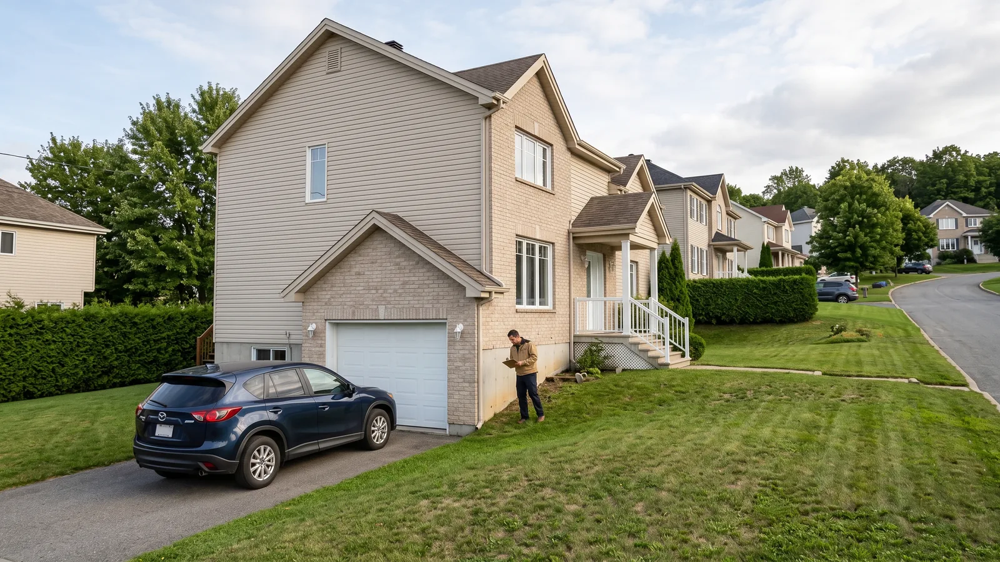
cities · sherbrookeInspection d'une maison sur terrain légèrement vallonné à Sherbrooke, quartier résidentiel crédible. Photographie immobilière documentaire, réaliste, lumière naturelle, architecture résidentielle québécoise crédible, composition horizontale 16:9, aucun texte lisible, aucun logo, aucune enseigne, aucune adresse, aucun monument reconnaissable, aucune main en gros plan.
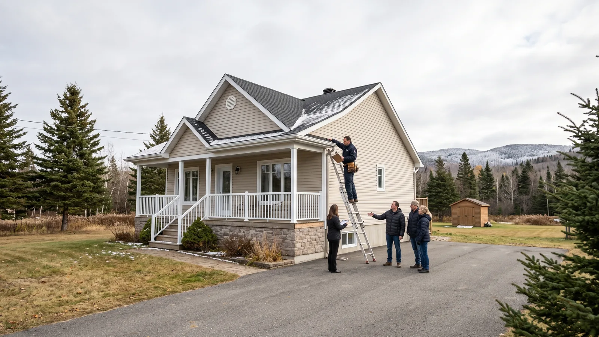
cities · saguenayInspection d'une maison détachée à Saguenay, terrain spacieux et climat nordique perceptible. Photographie immobilière documentaire, réaliste, lumière naturelle, architecture résidentielle québécoise crédible, composition horizontale 16:9, aucun texte lisible, aucun logo, aucune enseigne, aucune adresse, aucun monument reconnaissable, aucune main en gros plan.
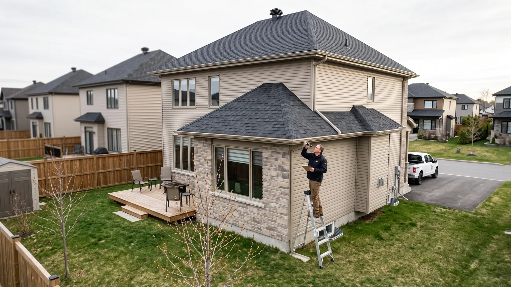
cities · levisInspection d'une maison familiale à Lévis, développement résidentiel de la Rive-Sud de Québec. Photographie immobilière documentaire, réaliste, lumière naturelle, architecture résidentielle québécoise crédible, composition horizontale 16:9, aucun texte lisible, aucun logo, aucune enseigne, aucune adresse, aucun monument reconnaissable, aucune main en gros plan.
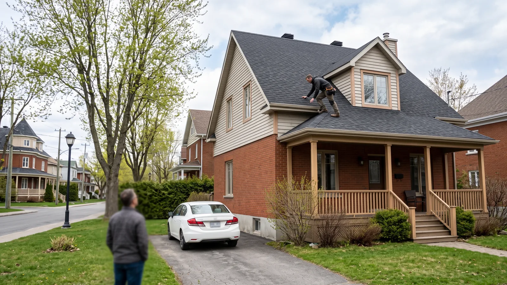
cities · trois-rivieresInspection d'une maison québécoise à Trois-Rivières, quartier mature de ville moyenne. Photographie immobilière documentaire, réaliste, lumière naturelle, architecture résidentielle québécoise crédible, composition horizontale 16:9, aucun texte lisible, aucun logo, aucune enseigne, aucune adresse, aucun monument reconnaissable, aucune main en gros plan.
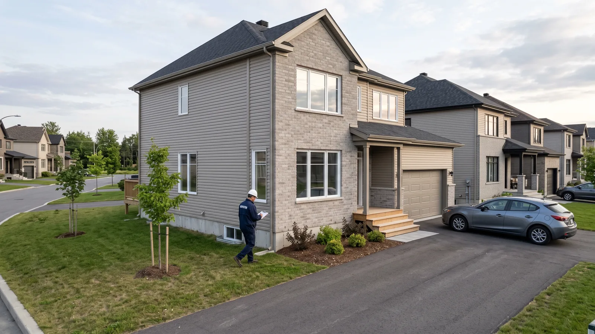
cities · terrebonneInspection d'une maison récente à Terrebonne, banlieue familiale et aménagement sobre. Photographie immobilière documentaire, réaliste, lumière naturelle, architecture résidentielle québécoise crédible, composition horizontale 16:9, aucun texte lisible, aucun logo, aucune enseigne, aucune adresse, aucun monument reconnaissable, aucune main en gros plan.
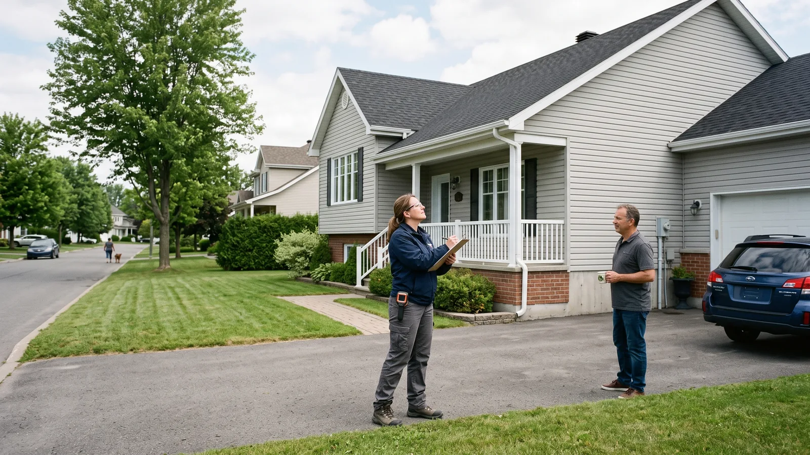
cities · saint-jean-sur-richelieuInspection d'une propriété unifamiliale à Saint-Jean-sur-Richelieu, terrain plat et quartier calme. Photographie immobilière documentaire, réaliste, lumière naturelle, architecture résidentielle québécoise crédible, composition horizontale 16:9, aucun texte lisible, aucun logo, aucune enseigne, aucune adresse, aucun monument reconnaissable, aucune main en gros plan.
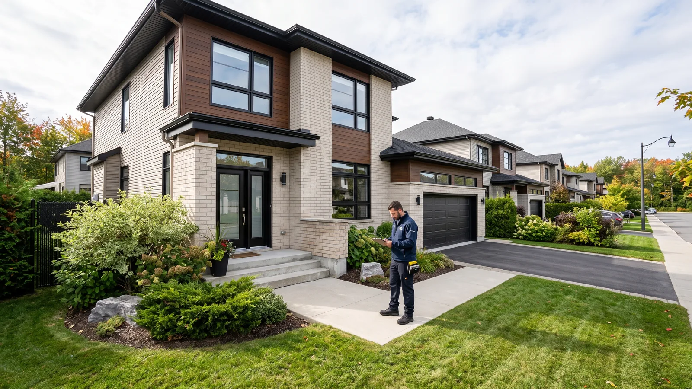
cities · brossardInspection d'une maison contemporaine à Brossard, banlieue dense et soignée sans logo. Photographie immobilière documentaire, réaliste, lumière naturelle, architecture résidentielle québécoise crédible, composition horizontale 16:9, aucun texte lisible, aucun logo, aucune enseigne, aucune adresse, aucun monument reconnaissable, aucune main en gros plan.
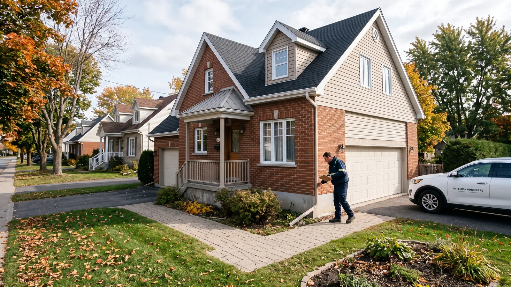
cities · drummondvilleInspection d'une maison familiale à Drummondville, contexte résidentiel de ville moyenne. Photographie immobilière documentaire, réaliste, lumière naturelle, architecture résidentielle québécoise crédible, composition horizontale 16:9, aucun texte lisible, aucun logo, aucune enseigne, aucune adresse, aucun monument reconnaissable, aucune main en gros plan.
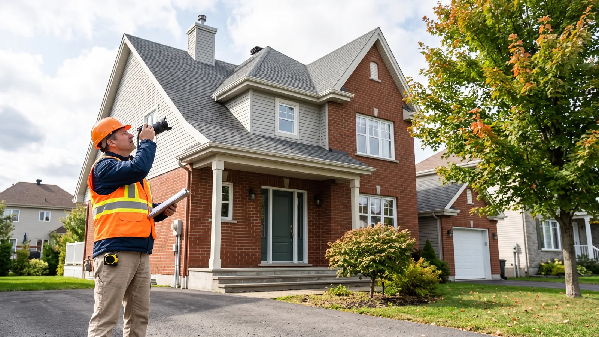
pool · inspection-01Inspecteur en bâtiment observant une toiture depuis le sol devant une maison québécoise. Photographie immobilière documentaire, réaliste, lumière naturelle, architecture résidentielle québécoise crédible, composition horizontale 16:9, aucun texte lisible, aucun logo, aucune enseigne, aucune adresse, aucun monument reconnaissable, aucune main en gros plan.
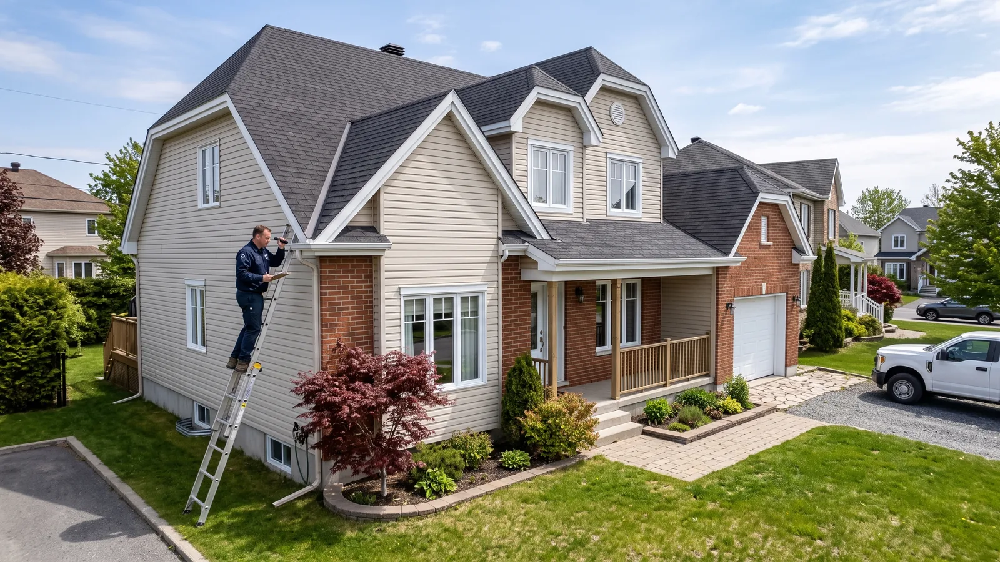
pool · inspection-02Maison unifamiliale québécoise photographiée pendant une inspection extérieure professionnelle. Photographie immobilière documentaire, réaliste, lumière naturelle, architecture résidentielle québécoise crédible, composition horizontale 16:9, aucun texte lisible, aucun logo, aucune enseigne, aucune adresse, aucun monument reconnaissable, aucune main en gros plan.
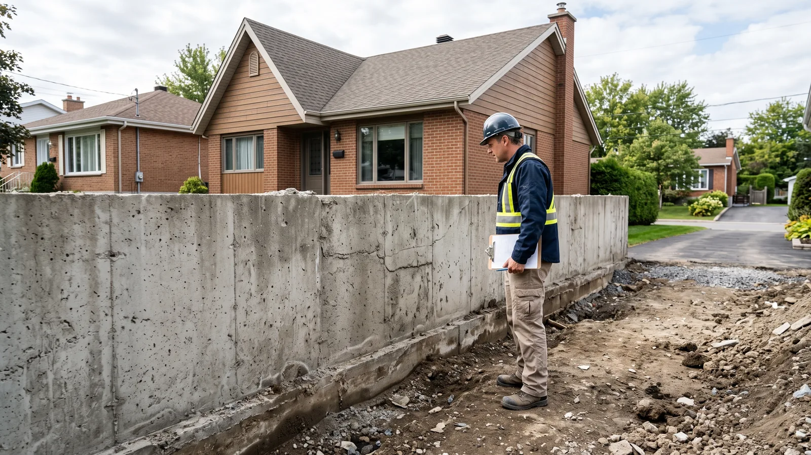
pool · inspection-03Inspecteur examinant une fondation de béton visible, plan assez large sans gros plan des mains. Photographie immobilière documentaire, réaliste, lumière naturelle, architecture résidentielle québécoise crédible, composition horizontale 16:9, aucun texte lisible, aucun logo, aucune enseigne, aucune adresse, aucun monument reconnaissable, aucune main en gros plan.
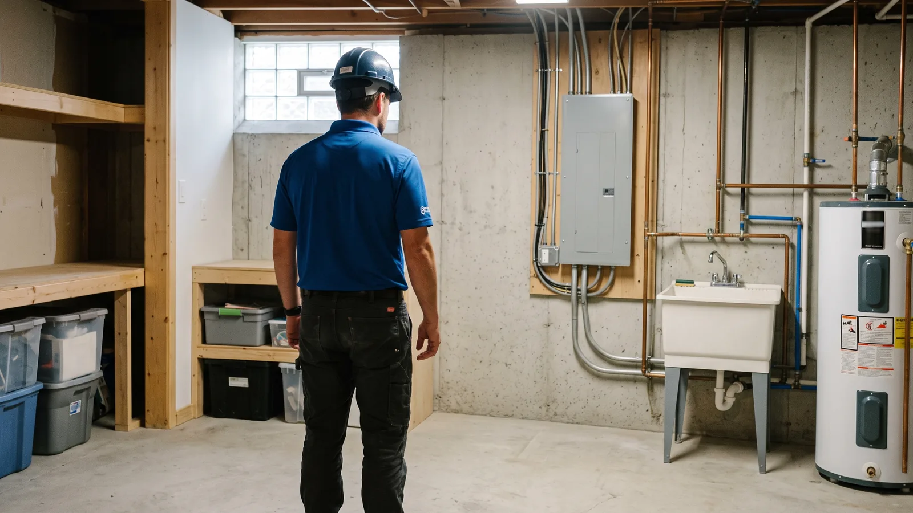
pool · inspection-04Inspection d'un sous-sol résidentiel propre avec fondation, plomberie et panneau visibles, personne de dos. Photographie immobilière documentaire, réaliste, lumière naturelle, architecture résidentielle québécoise crédible, composition horizontale 16:9, aucun texte lisible, aucun logo, aucune enseigne, aucune adresse, aucun monument reconnaissable, aucune main en gros plan.
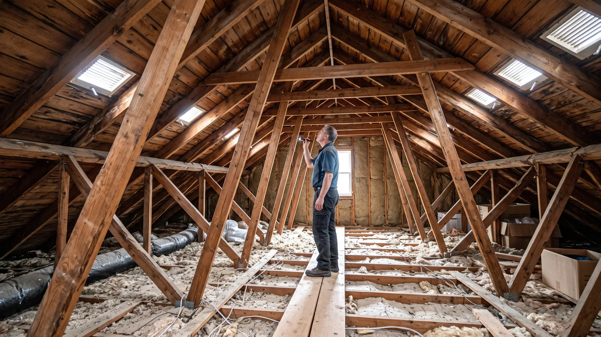
pool · inspection-05Inspection visuelle d'un grenier résidentiel bien éclairé, structure de toit visible. Photographie immobilière documentaire, réaliste, lumière naturelle, architecture résidentielle québécoise crédible, composition horizontale 16:9, aucun texte lisible, aucun logo, aucune enseigne, aucune adresse, aucun monument reconnaissable, aucune main en gros plan.
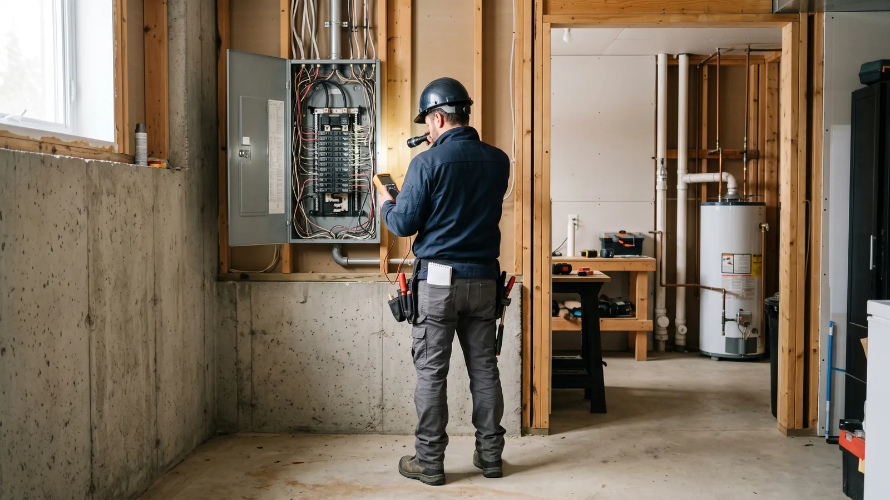
pool · inspection-06Inspecteur de dos examinant un panneau électrique résidentiel, plan large et équipement crédible. Photographie immobilière documentaire, réaliste, lumière naturelle, architecture résidentielle québécoise crédible, composition horizontale 16:9, aucun texte lisible, aucun logo, aucune enseigne, aucune adresse, aucun monument reconnaissable, aucune main en gros plan.
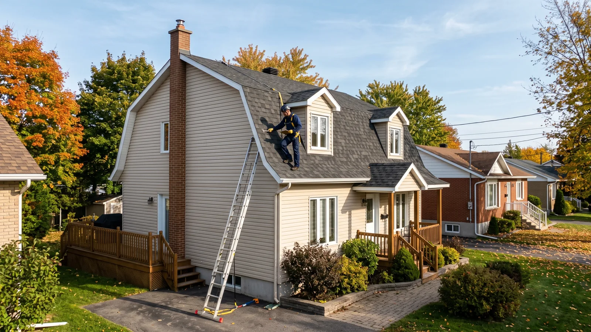
pool · inspection-07Inspection d'une toiture en pente depuis une échelle sécurisée, inspecteur vu de loin. Photographie immobilière documentaire, réaliste, lumière naturelle, architecture résidentielle québécoise crédible, composition horizontale 16:9, aucun texte lisible, aucun logo, aucune enseigne, aucune adresse, aucun monument reconnaissable, aucune main en gros plan.
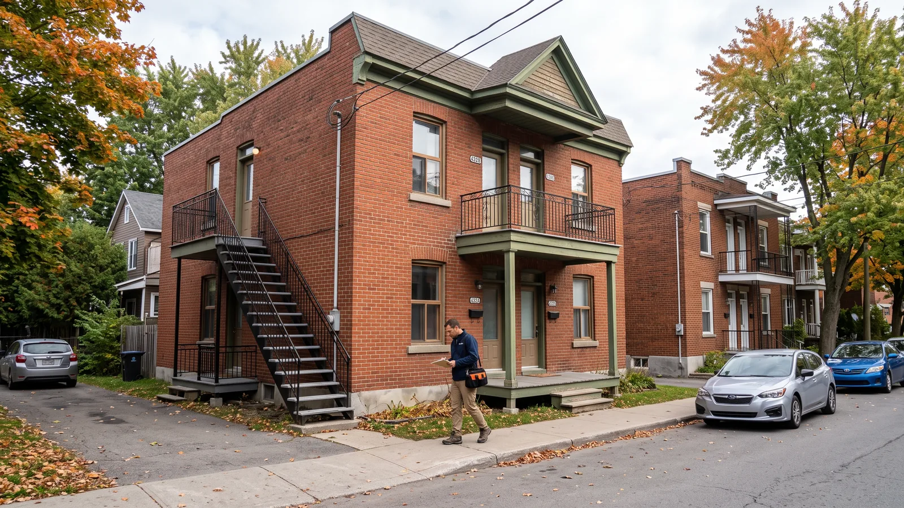
pool · inspection-08Inspection extérieure d'un duplex en brique dans une rue résidentielle québécoise. Photographie immobilière documentaire, réaliste, lumière naturelle, architecture résidentielle québécoise crédible, composition horizontale 16:9, aucun texte lisible, aucun logo, aucune enseigne, aucune adresse, aucun monument reconnaissable, aucune main en gros plan.
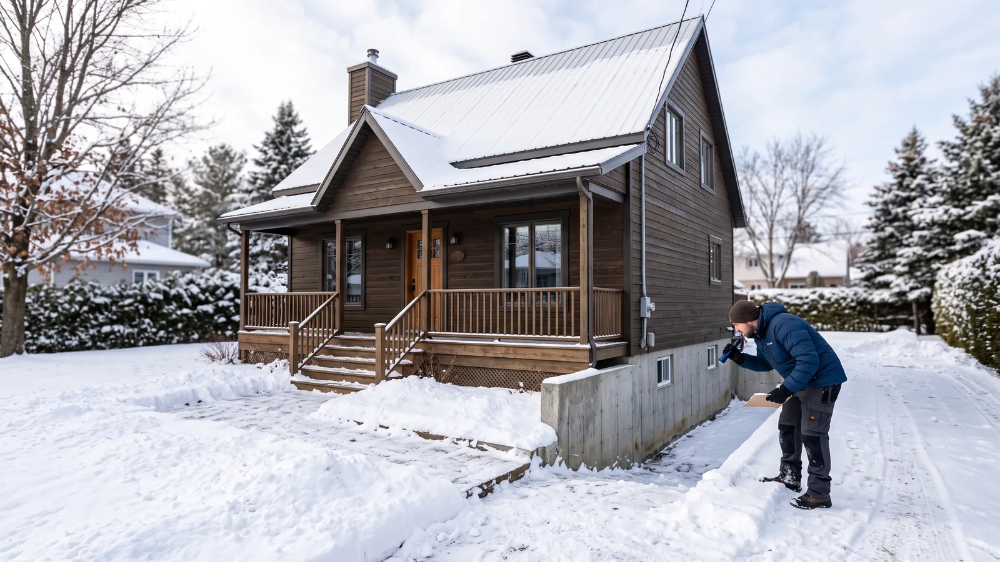
pool · inspection-09Inspection d'une maison en hiver léger au Québec, neige dégagée autour de la fondation. Photographie immobilière documentaire, réaliste, lumière naturelle, architecture résidentielle québécoise crédible, composition horizontale 16:9, aucun texte lisible, aucun logo, aucune enseigne, aucune adresse, aucun monument reconnaissable, aucune main en gros plan.
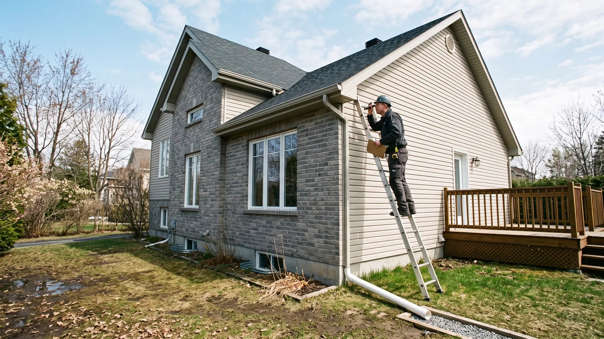
pool · inspection-10Inspection d'une maison au printemps, gouttières et drainage extérieur visibles. Photographie immobilière documentaire, réaliste, lumière naturelle, architecture résidentielle québécoise crédible, composition horizontale 16:9, aucun texte lisible, aucun logo, aucune enseigne, aucune adresse, aucun monument reconnaissable, aucune main en gros plan.
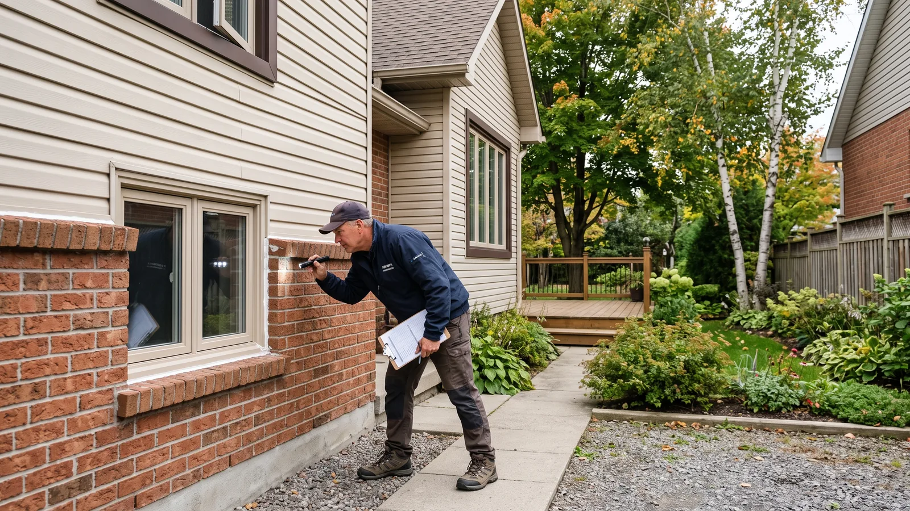
pool · inspection-11Inspecteur examinant une fenêtre et son calfeutrage depuis l'extérieur, plan large. Photographie immobilière documentaire, réaliste, lumière naturelle, architecture résidentielle québécoise crédible, composition horizontale 16:9, aucun texte lisible, aucun logo, aucune enseigne, aucune adresse, aucun monument reconnaissable, aucune main en gros plan.
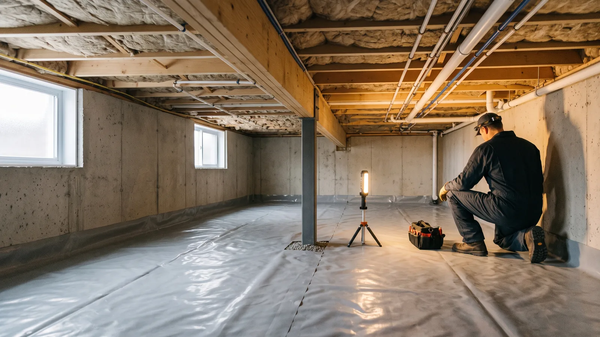
pool · inspection-12Inspection d'un vide sanitaire résidentiel propre et accessible, éclairage documentaire. Photographie immobilière documentaire, réaliste, lumière naturelle, architecture résidentielle québécoise crédible, composition horizontale 16:9, aucun texte lisible, aucun logo, aucune enseigne, aucune adresse, aucun monument reconnaissable, aucune main en gros plan.
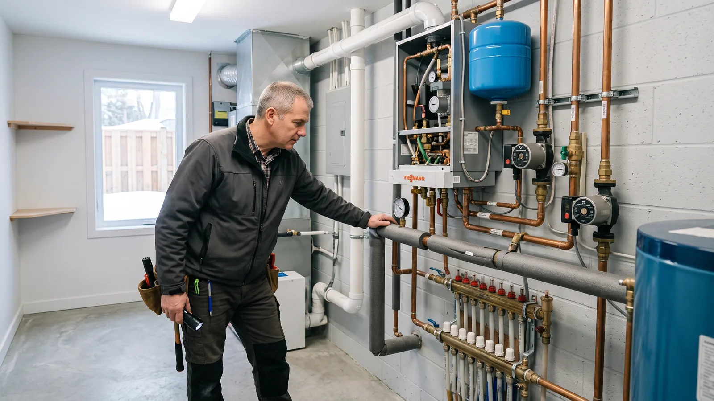
pool · inspection-13Inspecteur observant un système de chauffage résidentiel dans une salle mécanique propre. Photographie immobilière documentaire, réaliste, lumière naturelle, architecture résidentielle québécoise crédible, composition horizontale 16:9, aucun texte lisible, aucun logo, aucune enseigne, aucune adresse, aucun monument reconnaissable, aucune main en gros plan.
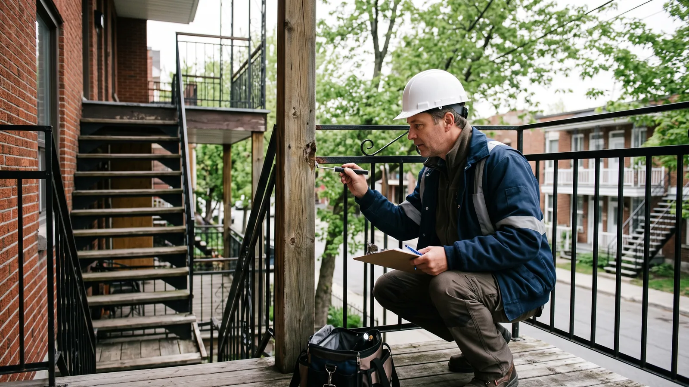
pool · inspection-14Inspection d'un balcon et de ses garde-corps sur une propriété résidentielle québécoise. Photographie immobilière documentaire, réaliste, lumière naturelle, architecture résidentielle québécoise crédible, composition horizontale 16:9, aucun texte lisible, aucun logo, aucune enseigne, aucune adresse, aucun monument reconnaissable, aucune main en gros plan.
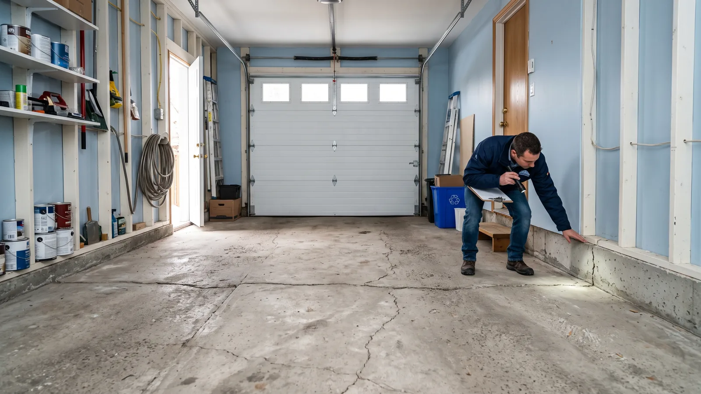
pool · inspection-15Inspection d'un garage attaché, dalle de béton et porte visibles, composition immobilière. Photographie immobilière documentaire, réaliste, lumière naturelle, architecture résidentielle québécoise crédible, composition horizontale 16:9, aucun texte lisible, aucun logo, aucune enseigne, aucune adresse, aucun monument reconnaissable, aucune main en gros plan.
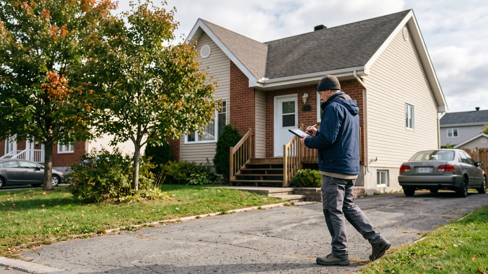
pool · inspection-16Inspecteur prenant des notes devant une maison, tablette sans texte lisible, personne de trois quarts éloignée. Photographie immobilière documentaire, réaliste, lumière naturelle, architecture résidentielle québécoise crédible, composition horizontale 16:9, aucun texte lisible, aucun logo, aucune enseigne, aucune adresse, aucun monument reconnaissable, aucune main en gros plan.
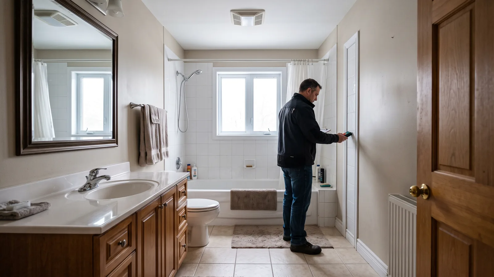
pool · inspection-17Vue large d'une salle de bain inspectée pour humidité et ventilation, aucun défaut exagéré. Photographie immobilière documentaire, réaliste, lumière naturelle, architecture résidentielle québécoise crédible, composition horizontale 16:9, aucun texte lisible, aucun logo, aucune enseigne, aucune adresse, aucun monument reconnaissable, aucune main en gros plan.
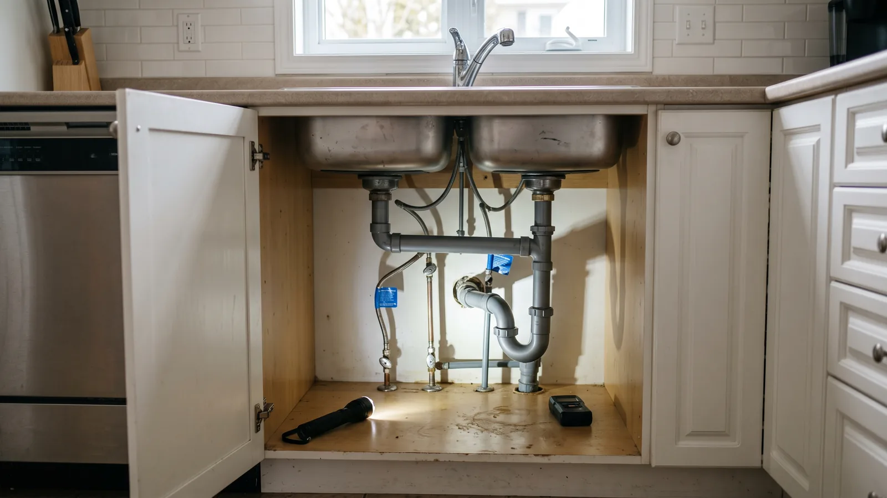
pool · inspection-18Inspection d'une cuisine résidentielle, plomberie sous évier visible en plan général sans mains. Photographie immobilière documentaire, réaliste, lumière naturelle, architecture résidentielle québécoise crédible, composition horizontale 16:9, aucun texte lisible, aucun logo, aucune enseigne, aucune adresse, aucun monument reconnaissable, aucune main en gros plan.
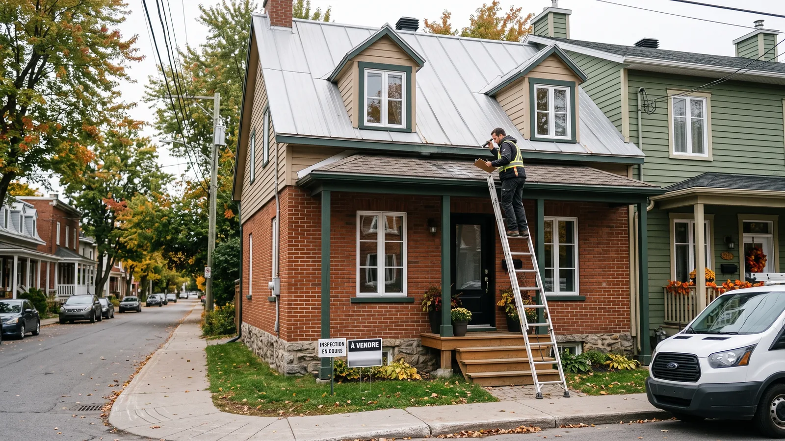
pool · inspection-19Maison de ville québécoise faisant l'objet d'une inspection préachat, extérieur réaliste. Photographie immobilière documentaire, réaliste, lumière naturelle, architecture résidentielle québécoise crédible, composition horizontale 16:9, aucun texte lisible, aucun logo, aucune enseigne, aucune adresse, aucun monument reconnaissable, aucune main en gros plan.
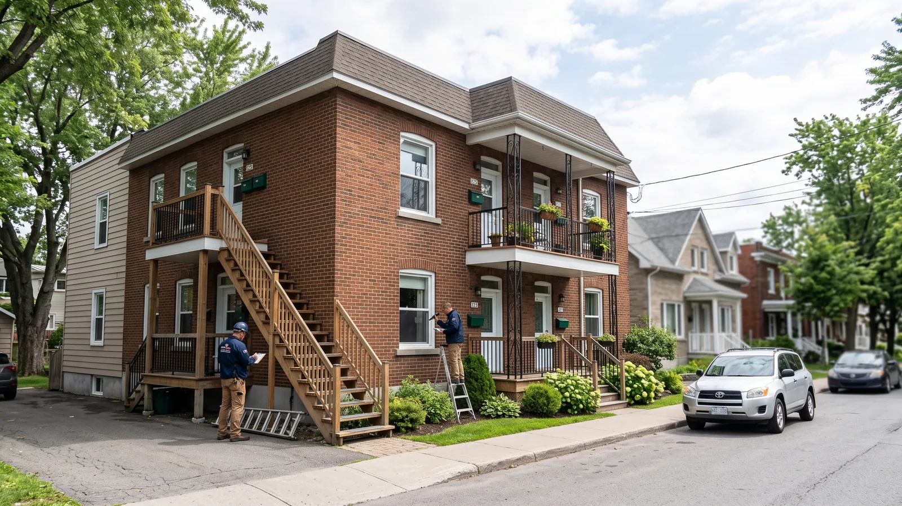
pool · inspection-20Petit plex résidentiel inspecté dans un quartier urbain calme au Québec. Photographie immobilière documentaire, réaliste, lumière naturelle, architecture résidentielle québécoise crédible, composition horizontale 16:9, aucun texte lisible, aucun logo, aucune enseigne, aucune adresse, aucun monument reconnaissable, aucune main en gros plan.
pool · inspection-21Maison plus ancienne bien entretenue pendant une inspection extérieure, maçonnerie et toiture visibles. Photographie immobilière documentaire, réaliste, lumière naturelle, architecture résidentielle québécoise crédible, composition horizontale 16:9, aucun texte lisible, aucun logo, aucune enseigne, aucune adresse, aucun monument reconnaissable, aucune main en gros plan.
pool · inspection-22Maison récente pendant une inspection préréception, chantier propre presque terminé. Photographie immobilière documentaire, réaliste, lumière naturelle, architecture résidentielle québécoise crédible, composition horizontale 16:9, aucun texte lisible, aucun logo, aucune enseigne, aucune adresse, aucun monument reconnaissable, aucune main en gros plan.
pool · inspection-23Inspecteur observant les signes de drainage autour d'une maison après une pluie légère. Photographie immobilière documentaire, réaliste, lumière naturelle, architecture résidentielle québécoise crédible, composition horizontale 16:9, aucun texte lisible, aucun logo, aucune enseigne, aucune adresse, aucun monument reconnaissable, aucune main en gros plan.
pool · inspection-24Inspection d'une cheminée de maçonnerie depuis le sol, maison complète dans le cadre. Photographie immobilière documentaire, réaliste, lumière naturelle, architecture résidentielle québécoise crédible, composition horizontale 16:9, aucun texte lisible, aucun logo, aucune enseigne, aucune adresse, aucun monument reconnaissable, aucune main en gros plan.
pool · inspection-25Rapport d'inspection posé sur une table avec photo de maison floue en arrière-plan, aucun texte lisible. Photographie immobilière documentaire, réaliste, lumière naturelle, architecture résidentielle québécoise crédible, composition horizontale 16:9, aucun texte lisible, aucun logo, aucune enseigne, aucune adresse, aucun monument reconnaissable, aucune main en gros plan.